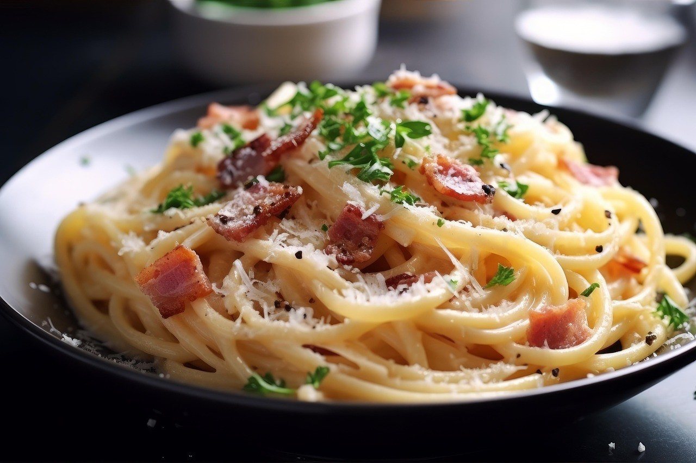

Featured Recipes :
Lasagna
A classic Italian dish made with layers of pasta, rich meat sauce, creamy béchamel, and melted cheese. Perfect for family dinners or special occasions.
The combination of tender pasta, savory meat sauce, and creamy béchamel creates a harmonious blend of flavors that will satisfy your taste buds. Each bite is a comforting and indulgent experience that will leave you craving for more. Whether you're a fan of traditional lasagna or prefer a vegetarian version, this recipe is sure to become a favorite in your household!
View Recipe
Carbonara
A traditional Italian pasta dish made with eggs, cheese, pancetta, and pepper. It's a quick and flavorful meal that's perfect for weeknights or when you're craving something comforting.
The creamy sauce is created by tossing hot pasta with the egg mixture, allowing the residual heat to cook the eggs and create a luscious coating for the noodles. The crispy pancetta adds a savory crunch, while the cheese provides a rich and tangy flavor. It's a simple yet indulgent dish that will satisfy your taste buds and leave you wanting more!

Spaghetti Bolognese
A hearty Italian pasta dish made with a rich meat sauce, tomatoes, onions, and herbs. It's a comforting and satisfying meal that's perfect for any day of the week.
The slow-cooked meat sauce is packed with flavor, and the tender spaghetti noodles soak up all the deliciousness. It's a classic dish that brings warmth and satisfaction to the table, making it a favorite for both kids and adults alike!
View Recipe